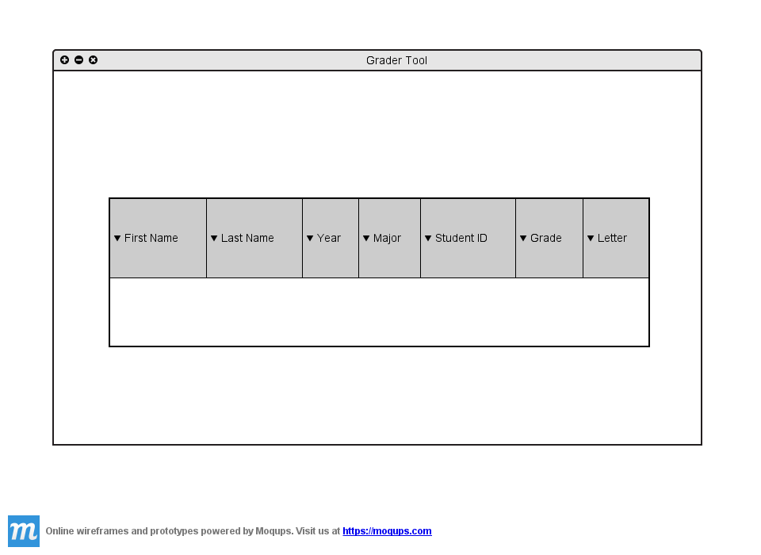
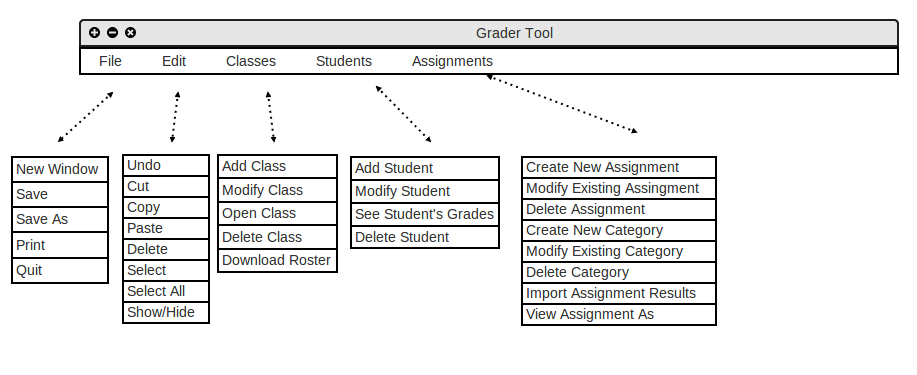

When the teacher initially invokes the Grader tool, the screen appears as shown
in Figure 2.1.1 A.

Figure 2.1.1 A: Initial screen.
Figure 2.1.1 B shows an expansion of the command menus.

Figure 2.1.1 B: Expanded command menus.
The File menu contains typical commands for manipulating data files and performing other system-level functions. 'File New Window' opens a new display of the Grader Tool in a new window. 'File Open' opens an existing spreadsheet from a previously saved file, and is displayed in another tab in the main spreadsheet window. 'File Save' saves unchanged information for a specific class to a previously defined location. 'File Save As' saves changed information for a particular class or assignment to a location on the user's disk. 'File Print' opens up a print view which will have printing options. 'File Quit' closes the Grader Tool application.
The 'Edit' menu contains commands for manipulating grade data during editing. 'Edit Undo' undoes the most recently completed editing commands. Repeated successive invocations of 'Undo' will undo successively earlier commands. 'Edit cut' copies the currently selected text to the user's clipboard and then deletes the selected text. 'Edit Copy' does the same thing as 'Edit Cut', but does not delete the selected text after being copied to the clipboard. 'Edit Paste' inserts the most recently cut or copied item into the position that is currently selected. 'Edit Delete' removes the currently selected item. 'Edit Select' selects and highlights all editable data in the current cell. 'Edit Select All' selects and highlights all the text into the diplay.
The Classes menu contains commands that allow the user to manage all of their different classes. The 'Add Class' command gives the grader the option to create a new class which will make another spreadsheet for that particular class. The 'Modify Class' command allows the grader to make changes to a particular class, such as the name or time of the class. The 'Open Class' command let's the grader open a spreadsheet of a class that he or she has on file, or has stored somewhere on their local machine. The 'Delete Class' command does exactly that, it removes a specified class and its spreadsheet.
The Students menu contains commands that allow the grader to manage the students in their classes. The 'Add Student' command gives the grader the option to add a new student to a particular class's spreadsheet. The 'Modify Student' command allows the grader to make changes to a students information, such as their name or student ID. The 'See Student's Grades' command lets the grader view the grades a student has received for each assignment/quiz/test. The 'Delete Student' command removes a student from a particular class.
The Assignments menu contains commands that allow the user to manage all of the different assignments they posted, or to add a new assignment. The 'Create New Assignment' command allows the user to make a new assignment for a particular class. The 'Modify Existing Assignment' command allows the grader to make changes to an assignment, such as the assignment's name or total points. The 'Delete Assignment' removes the assignment from a particular class's spreadsheet. The 'Import Assignment Results' command let's the user import a file containing the assignment and the grades the students got on it, and then inserts it into a specified spreadsheet.